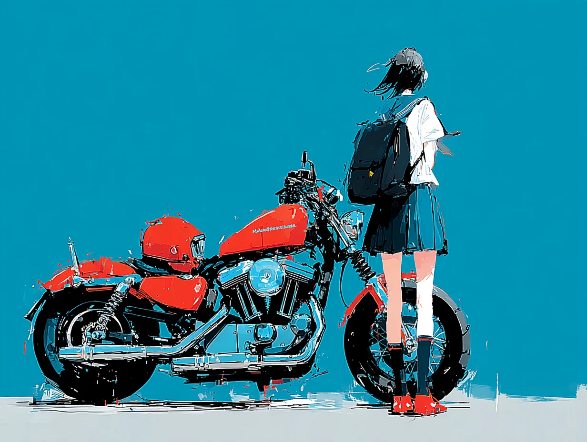

AFTERSCHOOL
GAKUSEI COLLECTION
FOR A BRIGHTER TOMORROW.
SAME GOOD ROADS.


GAKUSEI / COLLECTION 0301 / 03
CONCEPT放課後は、まだ終わらない。
帰り道の風。理由のない遠回り。約束がなくても、なんだか明日が楽しみだった。あの頃の自由な気分を、今の自分の服にする。好きなものに夢中になる時間は、いつだってここから。
FOR A BRIGHTER TOMORROW. SAME
YESTERDAY.
DIFFERENT
TOMORROW.02
PRODUCTS
16 ITEMSGAKUSEI TEE 083
¥6,475 税込
購入する ↗GAKUSEI TEE 084
¥6,475 税込
購入する ↗GAKUSEI TEE 085
¥6,475 税込
購入する ↗GAKUSEI TEE 086
¥6,475 税込
購入する ↗GAKUSEI TEE 087
¥6,475 税込
購入する ↗GAKUSEI TEE 088
¥6,475 税込
購入する ↗GAKUSEI TEE 089
¥6,475 税込
購入する ↗GAKUSEI TEE 090
¥6,475 税込
購入する ↗GAKUSEI TEE 091
¥6,475 税込
購入する ↗GAKUSEI TEE 092
¥6,475 税込
購入する ↗GAKUSEI TEE 093
¥6,475 税込
購入する ↗GAKUSEI TEE 094
¥6,475 税込
購入する ↗GAKUSEI TEE 095
¥6,475 税込
購入する ↗GAKUSEI TEE 096
¥6,475 税込
購入する ↗GAKUSEI TEE 097
¥6,475 税込
購入する ↗GAKUSEI TEE 098
¥6,475 税込
購入する ↗購入・サイズ選択は SUZURI の商品ページで。表示価格は税込です。
03LOOK BOOK
05 VISUALS / 横スクロール ※掲載している着用イメージは、商品画像をもとに制作したイメージビジュアルです。実際の商品を着用して撮影したものではないため、色味・質感・サイズ感などが実物と異なる場合があります。